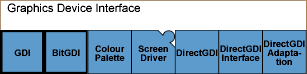

Graphics Device
Interface (GDI) Collection
The Graphics Device Interface (GDI) collection provides important
functionality within the Graphics subsystem. The functionality includes graphics
device abstraction, linear digital differential analysis, font description
and information, printer devices abstraction, line breaking and text rendering.
Figure 1. The GDI collection

- GDI Collection Overview
The Graphics Device Interface (GDI) collection is an important collection within the Graphics subsystem. It provides a suite of abstract base classes, interfaces and data structures. The suite represents and interacts with physical graphics hardware such as display screens, off-screen memory and printers.
- Graphics Device Interface Concepts
This section introduces some important GDI concepts, such as the graphics context (GC), pictures (which in this context are objects that can be drawn to a graphics context and can be stored and restored), and twips and zooming.
- Graphics Device Interface Tutorials
This section provides examples of working with the GDI API to perform various drawing operations, to store and restore pictures and to zoom.
- Graphics Device Interface Example Code
Example code for the Graphics Device Interface collection.
- GDI Component
The GDI component provides abstract interfaces for drawing to devices, such as screens and printers.
- BitGDI Component
- Colour Palette Component
The Colour Palette component provides palette support to the GDI and Font and Bitmap Server. A palette is a set of colors, which is a subset of the full range of colors.
- Screen Driver Component
- DirectGDI Component
The DirectGDI component provides a graphics context that can be hardware accelerated, and allows an asynchronous interface.
- DirectGDI Interface Component
The DirectGDI Interface component forms the Hardware Adaptation Interface (HAI) part of the DirectGDI framework, which enables graphics hardware accelerated rendering.
- DirectGDI Adaptation Component
The DirectGDI Adaptation component consists of two DirectGDI adaptations. One is a purely software adaptation that is suitable for use in phones that do no include graphics acceleration hardware. The other is a hardware adaptation that is provided for reference purposes.
Copyright ©2010 Nokia Corporation and/or its subsidiary(-ies).
All rights
reserved. Unless otherwise stated, these materials are provided under the terms of the Eclipse Public License
v1.0.